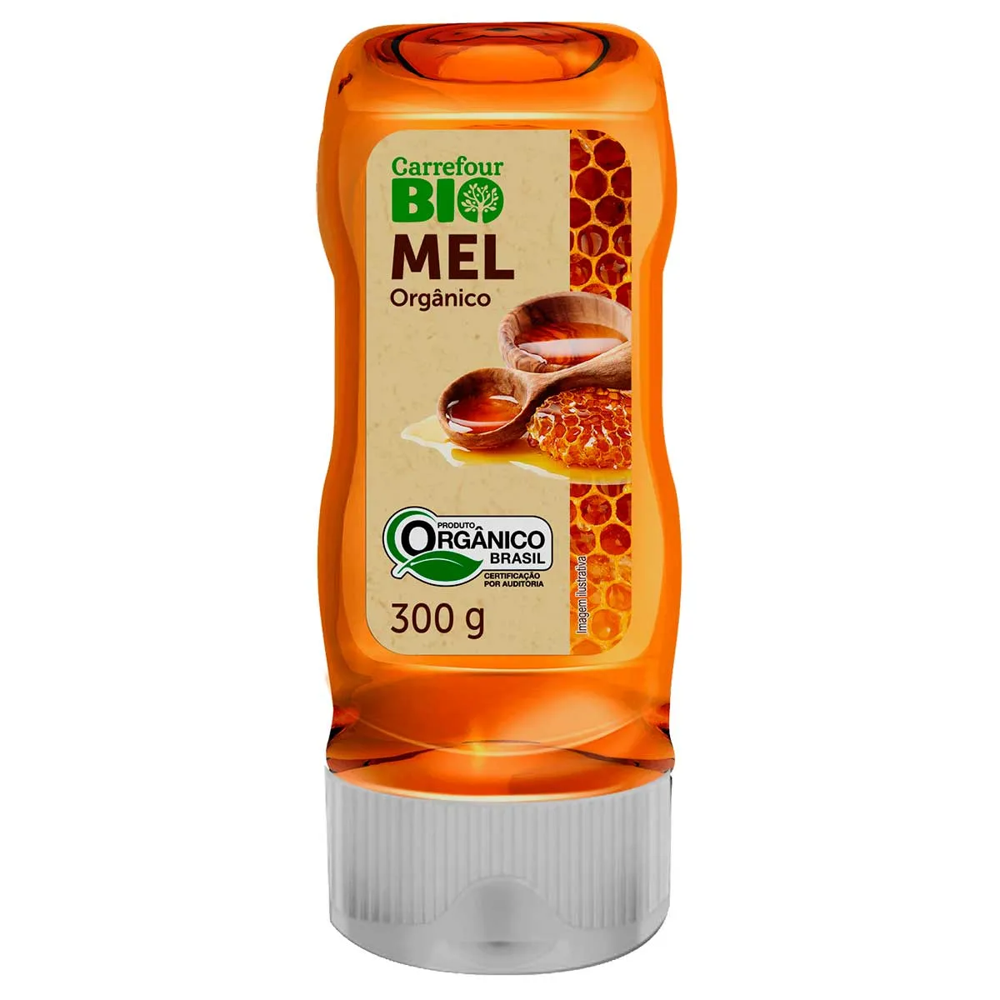

Mel da Abelha

Marca: Flor de Laranjeira
Descrição do produto
O mel da abelha é um alimento natural produzido pelas abelhas a partir do néctar das flores. É um produto doce e nutritivo, utilizado na culinária e conhecido por seus benefícios à saúde. O processo de produção do mel envolve a coleta do néctar, a transformação por enzimas digestivas das abelhas e o armazenamento em favos de mel.